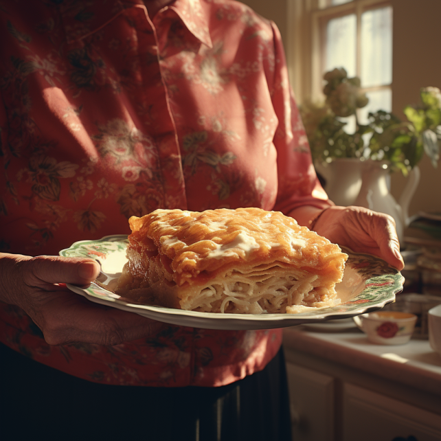

Classic Lasagna Recipe

Ingredients
- 1 pound ground beef
- 1 onion, chopped
- 2 cloves garlic, minced
- 1 (28 ounce) can crushed tomatoes
- 2 (6 ounce) cans tomato paste
- 2 (6.5 ounce) cans canned tomato sauce
- 1/2 cup water
- 2 tablespoons white sugar
- 2 teaspoons dried basil leaves
- 1/2 teaspoon salt
- 1/4 teaspoon ground black pepper
- 4 cups ricotta cheese
- 1 egg
- 3 cups shredded mozzarella cheese
- 2/3 cup grated Parmesan cheese
- 2 tablespoons chopped fresh parsley
- 12 lasagna noodles, cooked and drained
Instructions
- In a large skillet over medium heat, cook and stir the ground beef, onion, and garlic until the meat is browned and the onion is tender. Drain excess fat.
- Stir in the crushed tomatoes, tomato paste, tomato sauce, and water. Add sugar, basil, salt, and pepper. Simmer, covered, for about 30 minutes, stirring occasionally.
- In a mixing bowl, combine ricotta cheese with egg and parsley.
- Preheat your oven to 375°F (190°C).
- To assemble, spread a thin layer of the meat sauce in the bottom of a 9x13-inch baking dish. Layer with lasagna noodles, ricotta mixture, mozzarella cheese, and Parmesan cheese. Repeat layers, and top with remaining meat sauce and mozzarella cheese.
- Cover with foil and bake in the preheated oven for 25 minutes. Remove the foil and bake for an additional 25 minutes, or until the lasagna is bubbly and golden.
- Let it cool for a few minutes before serving. Enjoy your delicious homemade lasagna!
I hope you'll love this recipe, freely inspired by Grand-Ma.
Home